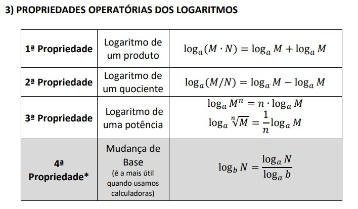
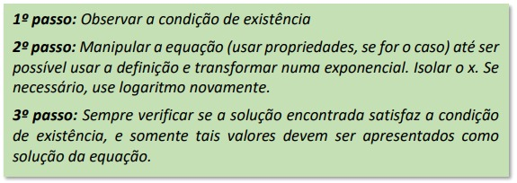

| Home | Função afim | Funcão exponencial | Função quadrática | Logaritmos | Vídeos explicativos | Formulário | Autoavaliação |
O logaritmo é uma função matemática que está intimamente relacionada com a exponenciação. A definição completa dos logaritmos envolve a relação entre uma base, um número e um expoente. O logaritmo de um número b na base a é o expoente ao qual a base a deve ser elevada para obter o número b
A definição formal do logaritmo é a seguinte:
Dado um número positivo b (chamado de "antilogaritmo"), uma base positiva a (chamada de "base") e um expoente x (chamado de "logaritmo"), o logaritmo na base a de b, denotado por log a b, é o número x que satisfaz a equação:
a(x)=b
Aqui, a é a base, b é o antilogaritmo e x é o logaritmo.
Principais propriedades dos logaritmos incluem:
Estas são apenas algumas.
Os logaritmos têm uma ampla variedade de aplicações em matemática, ciências, engenharia, economia, e muitas outras áreas, particularmente onde a relação entre números exponenciais precisa ser simplificada ou analisada.
Para base 10, log₁₀(100) = 2, pois 10² = 100.
Essas são apenas algumas das muitas áreas onde os logaritmos desempenham um papel importante para modelar, entender e resolver problemas de várias disciplinas.
As propriedades operatórias dos logaritmos são um conjunto de regras matemáticas que ajudam a simplificar e manipular expressões logarítmicas. Elas são úteis para realizar cálculos e resolver equações envolvendo logaritmos. Aqui estão algumas das propriedades operatórias mais comuns dos logaritmos:
Os logaritmos têm várias aplicações em cálculos exponenciais e em diversas áreas da matemática, ciências naturais, engenharia e outras disciplinas. Algumas das principais aplicações incluem:
Logaritmos podem ser usados para resolver equações exponenciais, transformando a equação em uma forma mais simples. Ao aplicar logaritmo em ambos os lados da equação, a variável de expoente é movida para o lado de fora, facilitando a solução.
Logaritmos ajudam a analisar taxas de crescimento que não são constantes. Ao usar logaritmos, é possível linearizar os dados e determinar se o crescimento é exponencial ou não. Além desses existem vários outros.
Suponha que você queira resolver a seguinte equação exponencial:
2x=16
Nesse caso, você precisa encontrar o valor de x que satisfaz essa equação. A maneira mais direta de fazer isso é reconhecer que 16 pode ser expresso como uma potência de 2:
16=24
Agora, podemos substituir 16 por 24 na equação original:
2x=24
Ou seja:
x=4
Uma equação logarítmica é uma equação que envolve uma ou mais expressões logarítmicas. Em outras palavras, é uma equação na qual a incógnita (a variável que queremos encontrar) aparece dentro de um logaritmo. As equações logarítmicas podem ser resolvidas usando propriedades dos logaritmos e técnicas algébricas.
Para resolvela você pode seguir os seguintes passos:
Vamos resolver um exemplo básico de equação logarítmica. Considere a seguinte equação:
log2(x)=3
resolvendo-a:
23=x
8=x
Portanto x=8.
Agora que você entendeu o que é logaritmos aqui estão algumas questões para você resolver: